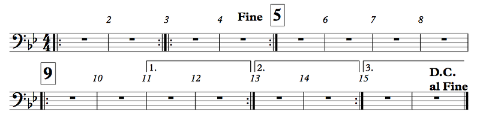
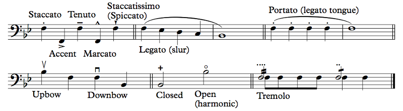
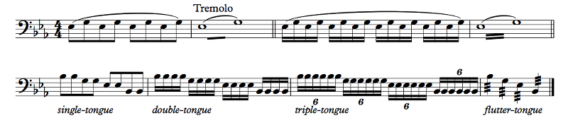
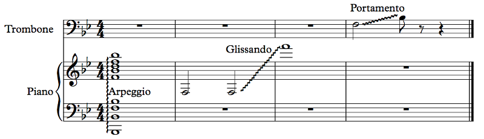

OFFTONIC THEORY
Chapter 3: Notation
In this chapter we'll get deeper into notation.
But what, there's more?
Not a lot more, actually. Now that you know how to read notes and rhythms, the rest is just details. Let's start with how soft or loud you get to play:
Dynamics

Example 3.1
n?
A lot of musical terminology comes from Italian, which was the language of music around the time it was codified. So we have the word for "soft", piano, and the word for "loud", forte.
Huh, piano? Like the piano?
The other way around, actually! Before the piano was invented, people used the harpsichord, which would play at the same volume no matter how hard you struck it. A new instrument was invented that could play both soft and loud, so it was called the pianoforte, meaning "softloud". The name got shortened to just "piano" and it stuck.
Anyway, these terms are abbreviated p for "piano" and f for forte. But just soft and loud aren't enough to properly encompass the gradations of dynamics in music — dynamics is just the fancy word for volume, and these abbreviations are known as dynamic markings. So, in addition to p and f we have pp, pianissimo, and ff, fortissimo, meaning "very soft" and "very loud", respectively, and we have mp, mezzopiano, and mf, mezzoforte, meaning "medium soft" and "medium loud", respectively. The "standard" lineup of dynamic markings, if you will, are pp, p, mp, mf, f, and ff. Occasionally, though, composers want to push extremes, and we get ppp and fff. Some call these pianississimo and fortississimo, respectively, but they don't actually have a real name; they're just triple-p and triple-f. Some composers push even farther with even more p's and f's. We're not going to do that here.
Much more rarely used is the n, which stands for niente, meaning "nothing".
Why would you use it at all? Wouldn't that just be a rest?
Kind of, yeah. That's why it's rare. But sometimes you want music to actually fade out to nothing, and this is a way to notate that.
What's that fp thing?
On the other side of the double bar, there are three things worth mentioning. The first is that fp, called a fortepiano. It means to start the note forte but immediately get down to piano. It's not too tricky to do on a timpani roll or a wind instrument, though you'd have trouble on a piano! Next to it are these widening lines followed by narrowing lines. These are called hairpins (because they look like hairpins, obviously), and they mean to get gradually louder or softer. The one that gets louder is called a crescendo, and the one that gets softer is called a diminuendo (or sometimes decrescendo). If the music is getting louder or softer over some time, you might see cresc. or dim. (or decresc.) written in the music instead of these hairpins.
In addition to these, there are some other dynamic markings, as well as written directions. The dynamic marking you're likely to see outside this list is sfz, which stands for sforzando, or rfz, which stands for rinforzando. Both refer to the same thing: playing a single note louder than the surrounding notes.
Wait, louder than surrounding notes? Why do you need to notate that in a special way?
Each of these dynamic markings remains until a new one shows up. So if you're currently at mf, you're going to stay at mf until you see a p or a crescendo or something like that.
As for written instructions, you might see subito or sub., which means "sudden". This is useless to a computer, which will change the dynamic immediately upon seeing a new one, but it can convey to a human player that the dynamic is intended to switch suddenly for effect. You may also see something like più f, which just means "louder": "più" means "more" and f means "loud". più p, on the other hand, means "softer". You may see something like molto cresc.; "molto" means "very", so this would be a big crescendo. There are a few other words in Italian that pertain to dynamics, but they don't come up that often; you can just look them up when they do.
Don't you confuse dynamics with lyrics?
No, because usually, on vocal staves, dynamics and hairpins are written above the staff. In instrumental music they go below. In piano music, when both hands have the same dynamic, they may just go in the middle.
So how soft is p anyway?
This is an interesting question. Dynamics are relative. If you're singing a solo over an orchestra, your soft still needs to be heard by the back of the auditorium, and the orchestra's fortissimo still needs to not overpower you. Generally, ff means as loud as you can make it without sacrificing your sound or screaming. A bit of that may be tolerable if you see fffff or whatever. Generally, you need to make your own calls about what's loud and what's soft, and by "you need to make your own calls" I mean your conductor will tell you, if you play in an ensemble. On your own, the dynamics are what you want them to be. And remember rule 0? The sheet music is actually just a suggestion even in the best of times. If you disagree with a written dynamic, you can always play something else.
But for crescendos and diminuendos, you should be a bit more careful. Back in middle school, I was in an honor band, and the conductor asked us, "What does a crescendo mean?" People's hands went up: "Get gradually loud!" Nope. "Start soft." Crescendo means "start soft". Now, it doesn't actually mean that. It means to get gradually louder. But... in order to have room to get louder, you need to start soft, even if it's not explicitly written in the music. That's just part of the interpretation. Obviously, without a subito piano, you won't want to make that change too noticeable! It's really easy, though, to do a crescendo or diminuendo too fast and just be sitting there afterwards. You have to really pace yourself! One thing you can do is mark on your music what dynamic level you ought to be at at various points during the hairpin. This is a fairly difficult skill to master, especially on a diminuendo.
It's easy to get excited in loud sections and go too fast, but don't forget that dynamics do not indicate tempo. Be careful not to rush during forte sections as well as not to drag during sections marked piano. Both of these dynamics also require good sound, so if you're singing or on a wind instrument, pp does not mean unsupported sound, and ff does not mean screaming. I don't want to get too much into fluid dynamics, but basically, if you have too little air pressure, you won't be able to sustain a steady stream and your pitch will go all over the place; if you have too much air pressure, your stream will get all turbulent and your pitch will, again, go all over the place. I don't know as much about non-wind instruments, but even for strings or guitars or percussion, or even electronic music, things can start to sound ugly at both ends of the volume spectrum. Play your electronic music too loud and you'll get clipping -- that's when your waveforms are too big; we'll talk about this much later -- or worse, blow out your speakers! Pluck your guitar string too loud and you'll get snapping. Bow your violin too softly and your sound will be jumpy. Just remember that dynamic markings are relative; sounding good should come first.
How important are dynamics? Do I need to include them?
It obviously depends on what you're putting them in, right? If you're releasing a recording, who cares what you write down or even if you write down anything at all? But if you're making sheet music for other people, dynamics are actually very important. I very, very strongly recommend that you listen to this piece: Joaquin Rodrigo's Concierto de Aranjuez for guitar and orchestra, movement II. It's about 11 minutes long, but it's one of the most beautiful pieces ever written. While you do that, pay attention to the dynamics, both in the guitar and in the orchestra. And look at Narciso Yepes's CRAZY-ass guitar with 10 strings. Anyway, dynamics give emotional weight to the music and make it interesting and listenable. You can be louder when you want more emotional intensity, softer in more tender moments. You can use dynamics to separate out the parts of the music that need to stand out, like a melody, over the background. Use a crescendo to build excitement — the crescendo is pretty much going to do that automatically; it's an easy trick! Want people to pay attention? Get subito piano at the very top of the crescendo. When you do a crescendo and a diminuendo on the same note it's called a swell; it's a useful effect. When you repeat something, repeat it at a different dynamic to make it different; during the long solo in the video I linked above, Yepes plays a phrase and then repeats it more softly and with a different stroke in order to make it different. If you do a crescendo towards a rest, I've heard this called "the loudest rest you've ever heard"; that's also a neat effect.
Any good performer will add his or her own subtle dynamics to a piece, following the emotional contour of the music. As a composer, you can control some of that process yourself. For this, you should know your audience. In my a cappella group, for example, people will probably not go too overboard with dynamics, even if they're written in, so when I arrange music for it, I'm pretty thorough with my dynamics so that something actually happens. When I conduct other people's music, that may not really happen if the dynamics aren't written in, mostly because there's just no time to think about such things. When you're performing or producing or whatever it is you do, take some time to think about dynamics. Map them out carefully throughout the music. If you're doing a solo, exaggerate the dynamics, like an actor wearing stage makeup to make his facial expressions visible even up in the balcony. Dynamics are the herbs and spices of music. Don't include them and your music will taste like nothing.
Control Structures
Musicians are lazy.
Hey! I resemble that remark!
I rest my case! (My case is also lazy.)
Oy, stop it with the joking.
No. Anyway, musicians are lazy. We like to play just one thing many times instead of playing many different things. And since we're lazy we also don't want to write that one thing many times; we just want to write it once!
You're so lazy you decided to write a music theory book? You sound like a software developer.
You misunderstand. I am sick and fucking tired of n00bs on Reddit asking these fucking stupid questions over and over just because they don't have any musical experience and don't understand basic facts about music, and I'm writing the book so that I don't have to repeat myself over and over and fucking over in /r/musictheory with basic, basic shit. I can just write it once and refer people to it here.
Couldn't you just, like, not answer those questions?
...
...Not when someone is wrong on the internet! Duty calls!
You're a fucking idiot. Whatever. Let's just keep going. Only a few dozen more chapters left. Control structures, you're saying?
...OK. Right. So. Control structures. They enable the composer to write stuff just once that the reader can play multiple times. We've already seen some examples, but let's review them.
Example 3.2
The bar with the colon after the 4/4 is a start repeat sign, and the thing with the colon at the very end is an end repeat sign. The start repeat is actually optional; the end repeat means to go back to the last start repeat or to the beginning of the music and repeat everything once. Sometimes a section is supposed to be played more than twice; there will be a written explanation to that effect like "Play 3x" in that case.
I don't understand, what is being repeated in this example?
The thick horizontal line with a number on top is known as a multirest, and it means to rest for that number of entire measures. In an orchestral piece, oftentimes only part of the ensemble will be playing at any given time, so everyone else is just sitting there waiting. Their rests are usually written like this. (Sometimes a player shouldn't play at all for a movement; that part will be marked tacet for the movement instead of being given notated rests.) Here's another example of multirests, plus a whole other stuff:
")
Example 3.3
What are... all those things?
The first thing is a set of repeat signs that have consumed Red Bull and acquired wings. The wings are just there to make the repeats easier to see; they don't actually have any meaning. Allegro is a tempo marking that means "fast". At measure 13, see that 1 in a box? That's a rehearsal number. It's useful when your bandmate wants to start at number 1; you know where that is. There's also a weird symbol there; we'll get back to that symbol later. Measure 14 has a little percent sign thingy. That is a measure repeat symbol; it just means to repeat the previous measure. It's common to see a bunch of these in a row if you're just playing the same thing over and over. There it is again at 16. At 19 and 20, that's a 2-measure repeat sign; it means to repeat the previous two measures. At 25 you have a 4-measure repeat sign; its function should be obvious by now. At number 2 there's another weird symbol; we'll get back to it in a moment. At number 3, we have an example of multirest splitting: why is there not a combined 20-measure multirest? Because the rehearsal number 3 is splitting that multirest. When the conductor wants to start at number 3, you don't need to do math to figure out where that is in your measure counting. At the end of that, though, there's a D.S. al Coda, del segno al coda, from the sign to the coda. A coda is an ending tag. So, you go back to the sign — that's at rehearsal number 1 — and go all the way until you see the coda symbol — that's rehearsal 2 — and jump to the coda at measure 49. Two more flow control bits are here, but we've seen them plenty of times before. The double bar right before the coda merely separates sections of the music, and the solid double bar at the end signifies the end of the piece, or end of the movement, as the case may be.
12-bar rests... How do you keep track of that?
With difficulty! The simplest way is to count: 1, 2, 3, 4, 2, 2, 3, 4, 3, 2, 3, 4, 4, 2, 3, 4, 5, 2, 3, 4, etc. You can also count on your hands, though that becomes a little bit less useful when you have 30-something-measure rests and only 5 fingers in your hand. Being a math nerd, I figured out how to count on my hand using binary; this lets you count up to 31 with one hand or 1023 with both hands together. That's easy: your thumb is the 1's bit, your index finger is your 2, your middle finger is your 4, etc. So, for measure 11, that's 8 + 2 + 1 so you hold up your thumb, index finger, and ring finger. Your thumb goes in and out every bar; your index finger does it every 2 bars, your middle finger every 4, etc. This has the added benefit of flipping off your conductor on bar 4.
I'm not a fucking second grader. I don't need my fingers to count.
Ha ha ha. Funny. You try playing percussion and see how quickly you get lost in the 64-measure rests with that kind of attitude! (As a percussionist in college, I could actually take a bathroom break during the rests sometimes and still get back before I had any notes to play.)
That said, in some music you don't really need to count, especially as you learn the piece better. You can learn when you'll need to come back in, and the conductor will hopefully give you a cue — a nod or a point or something — to let you know that it's time.
Example 3.4
What is the logic behind these rehearsal numbers?
These rehearsal numbers are just the measure numbers for the specified measures.
Why use those instead of letters or sequential numbers?
Taste. I generally prefer letters, honestly. Bar numbers are useful, since in general not every bar number is marked. Most of the time, rehearsal numbers go at significant points in the music, but some composers prefer to put a rehearsal number every 5 bars to make it easier to count; if you say "bar 116" that's obviously the bar after 115. I personally hate sequential numbers. When I was a freshman in high school, I got picked to be first chair clarinet of my All-County honor band. My band directors couldn't believe it. Neither could I. There was no way I was that good. (I think I impressed the judges with my dynamics, actually. Use dynamics.) Anyway, as first chair I got to do some solos, and I had a solo in one piece, Elsa's Procession to the Cathedral by Wagner. There is a lot to hate about Wagner, and he decided to compound it all by using fucking sequential numbers. So when the conductor wanted me to start at number 2, I thought he meant measure 2 (I was in way over my head so I was in a bit of sensory overload at that moment) and didn't come in on my solo. Fucking embarrassing. I eventually figured it out, but we'd already moved on. Well, I don't want any poor unfortunate soul to fall prey to this anti-Semitic trap, so I don't use sequential numbers.
Did... did you just call sequential numbers anti-Semitic?
Wagner used them, so yeah.
What the actual fuck, man. Besides, you said All-County band, and Wagner wrote that opera for an orchestra to accompany the singers. Are you sure it wasn't just the publisher of the transcription that fucked you over?
...Maybe. Dude, the numbers weren't even in boxes! How the fuck was I supposed to find them?
You really need to chill. This happened in, what, 1999? Get over it.
I am over it, dammit! Still, I don't use sequential numbers. Too confusing.
Anyway. What's going on at measure 3?
Measure 3? Nothing. Oh, that. That's just what a start repeat on top of an end repeat looks like without wings.
We have a few more control structures here. At measure 11 we have a first ending. So, when we're going from 9 the first time, we go to the first ending, and that repeat sign will land us back at 9. The second time, we skip the first ending and go to the second ending. That also has a repeat; we take the repeat and end up back at 9 a third time, and this time we skip over the first and second endings and take the third ending. Here, there's a D.C. al Fine. D.C. stands for da capo, from the start. So, you go back to the start, and you stop where it says Fine, meaning "end".
So you repeat mm. 1-2 and 3-4 again?
Yes, but just once. The convention is that you don't take repeats on a D.C. or D.S. By the way, I noticed that you used mm. Nice. Usually, m. is the abbreviation for "measure", so m. 69 is measure 69. The plural is actually mm., so mm. 69-70 means measures 69 to 70.
What's the overall order of measures, then?
I'll let you figure it out first!
OK, it's: 1 2 1 2 3 4 3 4 5 6 7 8 9 10 11 12 9 10 13 14 9 10 15 16 1 2 3 4. Try to follow all the repeats correctly and see if you get that.
I did. Repeats are easy!
They are... mostly. By the way, there are some repeat possibilities that I didn't go into, but they use the same symbols. You may have, for example, an ending with 1., 3. written on it, meaning that the ending is taken on the first and third times, and the second ending is different and repeats back. It's usually not difficult to follow this stuff. Also fairly common are instructions to play something 1st time only or 2nd time only. Sometimes there'll be two dynamic markings listed with instructions for which is to be used the first time and which the second. In vocal music, sometimes the rhythm differs between verses or there's an extra pickup somewhere, so notes in parentheses or with smaller noteheads may be used to demonstrate the other verse's rhythm. It's usually pretty self-explanatory.
What is actually difficult about repeats is... remembering that they exist! Far and away your biggest challenge with repeats will be skipping the first ending the second time, going back to the right spot, etc. It's really easy conceptually, but when you're focused on reading the notes, you just forget. It happens to all of us.
Sometimes music is supposed to repeat indefinitely. A vamp in a musical, for example, does this, when the music needs to just keep repeating until something happens or is done happening. We actually have hand signs for this. I usually just hold up one finger to tell people to take the first ending and two for second ending. The sign for repeating is just a rolling motion. The sign for not repeating is a closed fist; it means "we're not taking the repeat". If you're the one giving this sign, you should do it fairly early so that you have time to get everyone's attention; it can be really ugly if everyone stops except one dude who wasn't looking.
Finally, some music can get really weird with repeats. Terry Riley's In C is an example. It consists of 53 short phrases, and each musician plays each of these phrases as many times as he or she wants before moving on to the next. I'm not going to link to a recording, but you can look for one if you want to listen to something really boring for an hour. But it's, like, next level boring. It's so boring that it's interesting. It's like watching a screensaver that starts as one shape and ends in another, and you want to keep watching it to see what it does, but it's still a fucking screensaver. That's In C. It's pure genius, but it's the kind of pure genius that only some people recognize while other people think it sounds like how going to the RMV feels. To me, listening to In C is transformative. To other people, it's the musical equivalent of being on hold. But it's not. When you're on hold the music just repeats, and every few seconds some voice reminds you that you're on hold because they're serving other customers. In C doesn't repeat. Ever. It's never the same way twice.
Articulations
Let's articulate some notes!
Example 3.5
These are, roughly speaking, articulations. They tell the player some of the details about how to play the note: whether it should be played short, connected, etc., for example. Many instruments have a range of ways of starting and stopping a sound, and these symbols tell the player which of those ways to use. Like dynamics, these can be relative too, and since notes quite often don't have any articulation markings on them, the player has to use his judgment to articulate it properly. You can think of articulation as the consonant you use when speaking. For example, if you say the word "ladder" like most Americans, you only make a small move with your tongue on the "dd" in the middle of the word. Try saying that word now, and then try really emphasizing that D: "laDDer". That has a very different sound, doesn't it? When writing vocal music, it's important to be aware of the different features of consonants, but in general, that's what these articulation markings are for. So let's go over them.
The first four are commonly used in jazz, and if you were to sing them, you'd sing each with a different syllable: a tenuto note is "doo", a staccato note is "dit", an accented note is "dah", and a marcato note is "dot" (pronounced with a vowel like "ah"). I think that's a good summary.
Staccato means "detached", and it generally just means to play the note short. If you had to get metrical, half the length would probably be appropriate, but most of the time the dot means "light" (Italian: leggiero), and "tastefully short". On wind instruments, there are actually two ways to stop the sound: you can use your tongue, like in the "t" of "dit", or you can use your diaphragm, like when you laugh. The diaphragm is much more difficult to control, but it can make a better, less snippy sound. Again, it's a judgment call.
The accent, sometimes also called a marcato (it can get confusing), is not usually very clearly defined. It doesn't actually mean to play louder; that's sfz. But playing it louder is one way to effect an accent. You can also just articulate it harder, like with a harder consonant, or just change your timbre — your "vowel", if you will — to something brighter. Notes with an accent should be... emphasized, somehow. It's a bit difficult to describe, and Sibelius won't do it justice (it'll just make the note louder). Another way to make an accent is to make the surrounding notes softer. Again, it's a judgment call.
The tenuto means "full value", but why would you short-change your notes in the first place anyway? Most people just play it as a non-accent, but sometimes the composer actually means that you should emphasize the note. Sometimes "full value" even means "leave some space between this note and the next", which is the exact opposite of what "full value" actually means. You kinda have to look at it and figure it out. Again, it's a judgment call.
The marcato means "marked", like, with additional emphasis. As the "dot" in the "doo-dit dah" system, it's both short and accented. Some composers don't actually want the note short, just more accented than a regular accent. If you see it over a whole note, for example, chances are you really just need to punch the hell out of that note. Punchy. That's probably how to best describe this articulation. Again, it's a judgment call.
Finally, the staccatissimo just means "very detached", and while the staccato is usually to be played light, the staccatissimo is usually to be played heavy. While the diaphragm way of stopping sound is fine in a staccato, in a staccatissimo you want to stop the sound as quickly as possible. Instead of thinking "dit", think "tut". Again, it's a judgment call.
So they're all judgment calls? What's the point, then?
See Rule 0. When you're performing a piece of music, your goal should (probably) be to make good music, and that means interpreting what the composer wrote even when the symbols may not be a perfect visualization.
What happens when you put more than one articulation on a note?
Again, it's... a... judgment call! Hopefully the composer decided to give you some indication of what it means. If not... you're on your own!
And what's... "spiccato"? Did I say that right?
I have no idea if you said it right; this is a text-based medium. But this is a technique used in string instruments where the bow bounces a little bit. This symbol does double duty; in some contexts it means staccatissimo, and in others it means spiccato. If you're playing a trumpet, it's not spiccato so you're safe playing things very short.
Next up is the slur. Legato means "connected", so when notes are under a slur, you should play them "connected", whatever that means. For voice and wind instruments, though, the slur has a specific meaning: don't articulate the notes following the first one. So this little descending quarter note thing would be played something like "dah-ah-ah-ah-aaaaaah", but without stopping the sound. In vocal music, singing a syllable on multiple notes is called melisma. On instruments like the piano, on the other hand, it just means to make the notes as connected as possible. "Legato" is more of a style, while a slur is this specific symbol. In a fast tempo, by the way, especially with short notes, it may be common practice to emphasize the first note of a slur a bit more than the others and to make the last note a bit shorter, to separate the slur from whatever comes next.
Caveat, though: some composers use the slur to indicate... I don't know what. Phrases? Who knows. There'll be a slur over many measures and there's no clear reason for it to be there. It suggests that the music in the slur should be "connected" somehow, but it's probably more of a general feeling than a specific instruction.
There's a slur with notes of the same pitch. I thought slurs were only between notes of different pitch, and ties were between notes of the same pitch. What gives?
A tie is always between two adjacent notes, so if you have three notes, you need to tie the first one to the second and then tie the second to the third. A slur goes over (or under) many notes at once. But this is an interesting thing. How do you slur two notes of the same pitch if there's no break from one to the next? How in the world do you slur a staccato? The answer is that this is how many composers indicate portato, where notes are only lightly separated. In wind instruments, that's a "legato tongue", like the "dd" in "ladder" from earlier: just a light touch. Another option for notating this is a tenuto line and a staccato dot on the same note, although that can also indicate that the notes should long but clearly separated and articulated. You might also see tenuto lines under the slur instead of staccato dots. That probably looks better, doesn't it?
Next we have some instrument-specific notation. String instruments can bow up or down, and that sign tells you which to do. Yeah, the upbow is the downward wedge and the downbow is the upward box. Don't ask me. I'm not a string player. The downbow is usually stronger than the upbow, which is why composers feel the need to tell you how to bow your own instrument. HEY, COMPOSERS, DON'T TREAD ON ME! Next think I know there'll be boxes of bow rosin floating in the Harbor. By the way, there used to be a lot more Boston Harbor than there is now. And there used to be hills in Somerville. They took away our hills and our water at the same time and now Back Bay is a thing.
Why are you telling me this? I don't care about some random city's history. Besides, you guys have a poor track record. First you dump perfectly good tea into your harbor, and then you kill dozens of people with... a molasses flood? Seriously? Next thing you're going to tell me that Fig Newtons and Fluff are from there. Feh!
...OK, whatever. Next are some very much variable symbols: closed and open. These depend entirely on context. If you're playing an instrument with a mute, like a trumpet with a plunger or a horn being hand muted, these symbols tell you whether the mute should be on or off (though there'll need to be a direction somewhere to tell you that). The general term for stopping a special technique is naturale (nat.). A mute is a sordino, so you might see con sordino or con sord. to indicate putting on a mute, and senza sordino or senza sord. (or nat.) to indicate removing it. The plural is sordini, so sometimes it says that instead. Percussion instruments may sometimes also be played closed or open. For example, you might hold a triangle such that the sound stops right away (closed) or rings (open). On guitar, the open symbol indicates an open (that is, unfretted) string. For example, the first string on a guitar plays a high E. You can play that high E on the fifth fret of the second string instead for a more controlled sound, but sometimes the music calls for the open E string, and that's how it will tell you.
This symbol can also be used for harmonics, which we'll talk about... much later. Basically, the idea is that if you change the way you're playing a note somewhat lightly, you can get a much higher note. For example, the first string on the guitar produces a high E (E4). If you lightly touch the string at the 12th fret and pluck the string, you'll actually get a higher E (E5), but the entire string will still vibrate, so it's a different sound quality. If the music intends for you to play that higher note using a harmonic instead of actually playing it normally, you'll get that circle symbol.
Finally, the tremolo: it's not clear that this belongs under articulations, to be honest, but it's close enough. The tremolo is a measured repetition of the note. A single stroke means to play the note twice, and a double stroke to play it four times. Another way of notating it is using multiple staccato dots. You would really just do one or the other. The problem is that it's actually really unclear whether what I just said is the way it's intended to be played; for example, the single stroke may actually refer to eighth notes and the double stroke to 16th notes. In that case, the composer ideally will write out what he means the first time and use the dots or tremolos as shorthand thereafter once you already have an example.
Do I have to write articulations every time? If I have to put dots on everything I will get tired. Wah.
Worry not! You can just do a few and write simile or sim. in the music, which means to just keep going like before. You may also see something like sempre stacc., meaning "always short", instead of those daft dots going on every note.
Example 3.6
First line here, we have the two-note tremolo. This is a bit weird. Again, there are two conventions, but it should be clear from context what's actually going on: the single stroke in the second measure could mean either divide into 2 notes or divide into eighth notes. The previous measure makes it clear. The way this kind of tremolo works, you rapidly (but measuredly) alternate between one note and the other. Both notes are written at full value: that's why you have two whole notes in 4/4. It's not necessarily easy to read, unfortunately! In the second set of measures, it's a 16th note tremolo, again, measured. I didn't show it, but with three strokes, it would most likely be an unmeasured tremolo: just alternate between the two notes as fast as humanly possible!
Second line I just illustrate some possibilities. Assuming a moderate enough tempo, you can single-tongue — "dah dah dah dah" — you can double-tongue — "daga daga daga daga" — or you can triple-tongue — "dagata dagata dagata dagata" or "dataga dataga dataga dataga". Obviously these only apply in wind instruments, and not even all of them: it's actually pretty hard to double tongue on single reeds like clarinets because some of this stuff depends on you being able to put your tongue in places that the mouthpiece occupies. On the other hand, this is completely standard in brass.
The last one, which I marked "flutter-tongue", is actually an unmeasured single-note tremolo (because it has three strokes, but again, context matters). On a percussion instrument it would represent a roll: hitting the instrument as quickly as possible repeatedly to make a kind of continuous sound, like one of those old-style alarm clocks with physical bells. Ring-a-ling-a-ling-a-ling! That's basically a roll. On a bowed string instrument, it's possible to create a similar effect by controlling the bow's bounce while moving it quickly back and forth. On a plucked string instrument, it's possible to do this by plucking the same string with multiple fingers alternating, or even plucking different strings at the same pitch. On a wind instrument, though, the way to achieve this effect is through flutter-tonguing: making a Spanish rolled R. How good this sounds can vary greatly by instrument; it's a pretty common effect on brass and flute, but instruments that go into your mouth make it much harder to do this and still sound good.
Example 3.7
Three effects here, all of which done very poorly by Sibelius. The first is an arpeggio. This word just refers to a chord — that's a bunch of notes at the same time — played one note at a time. So here we take a Bb major chord (we'll learn about those soon enough), which consists of Bb, D, and F at various octaves, and play it one note at a time thanks to that wavy vertical line.
How do you play that chord? I can't reach all of the notes with my hands...
That's why it's in an arpeggio. You can kind of use both hands and take some time to play each note in order. When composers want you to play physically impossible chords, arpeggiating them is the only option. If you look back at the Valsa—Chôro in Example 2.7, there are some chords that expect you to have more fingers in your hand than you probably actually have (unless you're a polydactyl, not to be confused with a pterodactyl, a kind of dinosaur). For those too, you have to arpeggiate. A guitar strum is essentially an arpeggio too. Sometimes there'll be a little arrow on the wavy line telling you whether to arpeggiate up or down. In certain guitar styles, like flamenco, there's actually a lot of both. Most of the time, though, the correct direction is up (meaning that you start at the lowest note, if that wasn't clear).
Next up is the gliss, short for glissando, meaning "gliding". In a glissando, you go from one note to the next while hitting all the notes in between, or at least whatever makes sense. On the piano, it's a little hard to hit every white key and black key, so you probably just drag your hand over the white keys or something. You may have to drag your other hand over the black keys at the same time if the music requires it. On other instruments, you may have to just hit the notes as quickly as you can. Playing scales quickly is an important skill for many instruments.
Sorry, what's a scale?
I keep forgetting that we haven't talked about those yet. Well, it's a bunch of notes in order. The kind of thing you might play in a glissando! Often, the notes of a glissando are actually written out, possibly using very small note values like 12-tuplets or something, and this kind of passage is called a run. You generally don't have to play those accurately, so long as you start and end at the right time and place.
On some instruments, the pitch change is actually continuous, and the glissando is sometimes known as a portamento. It'll often still be called a glissando. Instruments that allow a continuous gliss are trombone (you move the slide), timpani (move the pedal), strings (move your finger), slide whistle (move the slide), voice (...uh), clarinet (do some fucking magic, because it makes no sense that you can do this), and other similar instruments where you can change the pitch continuously. Note that Sibelius sucks at reproducing this, so here's the US Air Force band playing Henry Fillmore's Lassus Trombone, featuring this effect.
Can you gliss between any two notes?
It would be nice, but... no. It depends on the way the instrument is set up. The trombone, for example, can only gliss between notes on the same partial.
Partial?
Ooh. We're going to get to that eventually. But, basically, the trombone slide has seven positions, so you can only play seven notes on it at a certain partial. The trombone is generally pitched in Bb, so you can play E2, F2, F#2, G2, Ab2, A2, and Bb2, and you can slide between them. (The Bb2 is when the slide is all the way in. That's first position. As you move out the slide, the instrument gets longer so the pitch goes down.) If you blow faster, though, your pitch jumps up! Now you're at an F3, so the notes you can play by moving out the slide are B2, C3, C#3, D3, Eb3, E3, F3. Blow faster still, and you're at the next partial, at Bb3, and the notes you have available are E3, F3, F#3, G3, Ab3, A3, Bb3. Blow even faster, and you're at D4 (well, a bit flat, so your positions other than first need to be pushed in a bit). Even faster, F4. Even faster, a really flat Ab4. Even faster than that, Bb4. At that point your lips are probably not too happy with you. You can go higher if you're a good player, but it requires serious chops.
Each of these "levels" of notes is a partial, and you can only slide between notes at the same partial. So you can gliss from F2 to Bb2, but you really can't gliss from F2 to B2; it's just not possible.
Other instruments have similar restrictions. Obviously on a violin you can only gliss between notes that go on the same string. On timpani, the notes have to be possible on the same drum. On a clarinet, a bunch of things have to be just right for you to be able to slide your fingers just right to not squeak on the way to that high C or wherever you're going (can you tell that I tried and failed at this many, many times?).
I have an unrelated thing to add here: vibrato. Vibrato is when the sound... pulsates. It can do that fairly quickly or not. Singers can sing with vibrato or they can sing straight. Many instruments can do vibrato. Flutes can do it easily with their diaphragms. Violins can do it easily by essentially shaking the finger they're using to stop the string (they can't do vibrato on an open string, which is why open strings sound so different). Vibrato does not mean making the pitch go up and down, but sometimes that happens anyway. It takes a lot of air support to pull off a vibrato convincingly as a singer. The thing is, you will almost never see a composer specifically calling for vibrato or for a lack thereof, so there's no notation for it. It's usually a decision of the performers. But if there were a standard notation, it would be related to the notations in this section.

Example 3.8
I felt like I heard too many notes... Was that intentional?
Oh, Sibelius... It's a bit depressing to realize how far the technology probably should have come if they hadn't fired their entire development team and hired some offsite devs who, perhaps well-meaning, didn't actually create the product. Luckily, that team is making another notation program called Dorico. I don't know how it compares; maybe I'll buy it when it matures a bit more and ditch Sibelius once and for all. I hear good things, though.
Anyway, these jazz articulations should be self-explanatory. The scoop and plop mean that you start the note a little lower/higher and scoop/plop to the right note. How quickly this happens, or whether you start on the beat or before, depends on what makes sense for the piece. The doit (rhymes with "boy" but with a T at the end) and fall mean that when you end the note, you go up/down as you stop playing it. Falls are relatively common; the others on this example, less so. Sometimes a fall may be written as a gliss without a connecting note. Sometimes there might even be a connecting note in smaller print to tell you how far to take the fall/doit, or even where to start on a scoop or plop.
How low should I go on a fall if it doesn't say? How quickly?
Whatever sounds the best in the song you're on. I usually try to stay on the note for a little bit before moving off so that you actually hear the note, and I treat the fall as an effect rather than as actual notes to play or sing. There's a lot of interpretation that goes into playing a piece of music, if you haven't noticed! The sheet music isn't a substitute for taste. There's one piece I've been involved in singing that has a fall lasting several beats. There's another where it's less than one. It depends on what the effect is that you're going for. With falls and doits, though, it's important that it not sound mechanical, and the sound has to die down during the fall/doit as well.
You might call these ornaments instead of articulations, since they're not really articulations, right? I mean, kinda? But they're a great way to transition to:
Ornaments
Ornaments are non-essential additions of notes to the melody that make it... prettier? That's a judgment call. It's hard to describe.
How can I tell if the addition is non-essential?
That's the big question in music theory, isn't it? What's important; what's less important? But in this case, there are symbols to make our lives easier:

Example 3.9
These are... kinda confusing? Why are there two lines?
Have I mentioned how much Sibelius sucks at playback sometimes? So I pulled a little trick: I just made two staves with equivalent music and muted the one with the ornaments themselves so that Sibelius can just do what I tell it to do in the lower staff. Plus, I get to show you what each ornament actually does! One big caveat is that these are kind of standard as of the 19th century, but before then performance practice was all over the place, and people played them every which way. In fact, they would often add ornaments where there weren't any written, just because they were showoffs. Think of ornamentation as adding your own touch to the music. The sheet music tells you what's important, and you pretty it up a bit with these ornaments, which varied by time and place.
We start with the trill, which just means to play the note then rapidly alternate between the note and the note above it. Generally, you do this as quickly as you can, but in the Baroque period (17th century, early 18th century) trills were often meant to be measured. The note you trill to is the note above it in the key, so the B trills to C# because there's a C# in the key signature. You can change this behavior by adding an accidental to the trill. The wavy line is kind of optional; if you have many notes tied together, the wavy line is very helpful at telling you where the trill ends, but for a single note it's not necessary. In Baroque times trills would actually start on the upper note, but that's not the case today; if you want a trill to start on the upper note, you can use a grace note.
Speaking of grace notes, a grace note is a little note in the music that steals time from the surrounding notes. There are two kinds, the acciaccatura (usually what is meant) and the appoggiatura (not so much anymore). The acciaccatura is usually played very quickly before the note it's attached to, and it has a little stroke in it. In some performance practice it actually comes on the beat rather than before. I used these grace notes for the little flourish at the end of the trill, a fairly common way to end a trill. There will often be several grace notes together in a little "rip" figure. Grace notes on drums make a flam (single grace note) or drag (two grace notes).
The appoggiatura, on the other hand, is a full-valued note that takes time from the note it's attached to. So, if you look at the second to last measure of Example 3.9, you can see a half note grace note, and it takes its time away from the whole note that it's attached to. Generally, appoggiaturas are half the value of the note they're on, unless that note has a dot, in which case they're two thirds (so a quarter note appoggiatura attached to a dotted quarter note, for example).
Why would you use an appoggiatura instead of just marking the rhythms? It seems kind of silly.
It's very silly, and that's why it's not done anymore. Actually, I have no idea why people ever bothered. But bother they did, so it's good to be able to read what they wrote, I suppose.
After that we have some ornaments that aren't very popular these days, since you might as well just write them as grace notes or write them out. The mordent quickly goes up a note or down a note then comes back. The mordent without a line through it is the upper mordent, and the one with the line is the lower mordent. Or, as they're sometimes known, the mordent and the inverted mordent. Guess which is the normal one and which is the inverted one! Nope, you're wrong. Or right. It depends on time and place, because the word "mordent" has referred to each one of them and not the other at different times and places.
What the fuck is wrong with musicians? Holy shit, man.
Anyway, the mordent, inverted or not, goes to the next note in the key, so if you want something else, use an accidental. The accidental should go below the lower mordent to signify that it's the lower note that's changing. If you make the wavy line of the mordent a little longer, it means that you go to the next note twice instead of just once; again, without a line it's up, and with a line it's down.
Finally here we have the turn, or gruppetto, which looks like a backwards S on its side. This one has a few different variations. The turn means to go up a note, back to the note, down a note, and back to the note. The inverted turn goes down first. There is no question about that here. The inverted turn can either be a turn with a vertical line or a backwards turn symbol (that goes down first, then up).
The weird thing about the turn is that when this ornament happens depends on placement. If you place it right on the note, you start on the upper note, go to the note, go to the lower, and return to the note to stay there for the duration. If you place it at the end of the note, the figure is basically a set of grace notes before the next note. If it's a dotted note and the turn is in the middle, the figure happens before the dot. It's easier to look at the examples. Again, the neighbor notes are from the key, so if you want to make chromatic alterations you have to use accidentals above and below the turn symbol to specify which notes get changed.
Do I actually need to know any of this?
You need to know about trills and grace notes, and that's it. The appoggiatura is a stupid thing in the first place, and the mordents and turns can just be represented by grace notes. In fact, if you're writing music, I highly recommend using grace notes and not these antiquated symbols, because nobody uses them anymore.
Tempos and Style
All right, this will be lots of fun. Or not. Actually, probably not. For historical reasons, the language of music is Italian. As a result, a lot of the written instructions are in Italian. You didn't expect that music had so much verbal shit, did you? Now, I don't use a lot of Italian terms in my music. I give directions in English, which the people I'm writing for understand. But back when music notation was a thing only Europeans did, it was useful for them to agree on a language. Not all of them did. You try playing Schumann, and he's got instructions in German all over the place. Nicht schnell, Schumann, nicht schnell. I think that means "not fast". I don't know German. I believe in forgiveness, but what the Germans did to us was unforgivable.
You realize the Nazis are gone, right? Germany has actually banned being a Nazi. They're nice, friendly people today. Do you seriously hold this historical grudge against modern Germany?
The fuck you talkin' 'bout Nazis for? I'm bitter over the 2014 World Cup. Fuck you, entire nation of Germany. Fuck you.
Ah, right, you're Brazilian. OK, that's completely understandable.
Thank you. So let's get right on it. These are basic tempo directions. Tempo markings are not even close to suggestions. You can totally disagree with them. What does the composer really mean when he says "Very Slowly"? Who knows. Does the music feel very slow to you? If not, then maybe you should slow down?
In all of this, keep in mind some of the basic Italian connecting words: con means "with"; senza means "without". Più means "more"; meno means "less". Molto means "a lot"; poco means "a little". Quasi means "almost". And, of course, the suffix -issimo means "very", as does the word assai, and generally -ando, -endo, and -indo mean "-ing", depending on the verb form (I don't actually know Italian either, but it's similar enough to Portuguese in these respects). Ma non troppo means "but not too much", and ma non tanto means "but not so much". Poco a poco means "little by little", useful in very gradual changes; sempre means "always". If you at least know this basic grammar stuff, music will be much more readable. Anyway, tempo markings:
- Largo, lento
- Very slow (like, 40-60 BPM); means "broadly" and "slowly", respectively. Larghissimo means "very largo", so slower still. Larghetto is just weird Italian, and it's basically "largo-ish", presumably somewhat less largo than largo itself.
- Adagio
- Slow (like, 60-80 BPM); means "at ease". Adagissimo, of course, is "very adagio", and adagietto is "adagio-ish". Whatever that means.
- Andante
- Walking speed (like, 80-110 BPM). Andantino is "andante-ish" and nobody is quite sure whether this is faster or slower than Andante. This is why you use metronome markings instead of vague Italian terms, people.
- Moderato
- Moderately (like, 110-140 BPM). It can be used as a modifier, like "allegro moderato".
- Allegro
- Fast (like, 140-170 BPM); means "cheerful". Allegrissimo is "very allegro" and allegretto is "allegro-ish".
- Presto, rapido
- Very fast (like, 170-200 BPM). Prestissimo is "very presto"; if you see this, just play as fast as you can.
Sometimes, the tempo changes. Here are the basic tempo changes:
- Ritardando or Ritenuto (rit.)
- Slow down gradually, generally until told otherwise. A lot of music has a dotted line for the duration of the ritard. For dramatic slowdowns you might see "molto rit."; for slight ones, "poco rit.". Wikipedia tells me that the ritenuto is more sudden than the ritardando, but you can safely ignore this difference.
- Rallentando (rall.)
- Broaden gradually, generally until told otherwise. A lot of music has a dotted line for the duration of the rallentando. For dramatic slowdowns you might see "molto rall."; for slight ones, "poco rall.". I personally use the rallentando at big pauses, like at the end of a piece, and I use the ritardando for more functional changes in tempo. This distinction is arbitrary, though. Both terms are basically synonymous.
- Allargando, meno mosso
- Broadening and less motion (slower), respectively.
- Accelerando (accel.)
- Speed up gradually; same rules as for the rit. or rall. You might see "poco accel." or "molto accel." as well.
- Stringendo (string.), affretando
- Tighten gradually. Same as accelerando, but possibly more subtle?
- Più mosso
- More motion (faster).
- Meno mosso
- Less motion (slower).
- a tempo
- When a ritard or accelerando, or something else, changes the tempo, a tempo brings the tempo back.
- Tempo I or tempo primo or come prima
- When there's a tempo change in a middle section, Tempo I brings the first section's tempo back. The difference between a tempo and Tempo I is that a tempo is to restore the current tempo that has been slowed down or sped up for whatever reason, while Tempo I is to restore an old tempo after a different one was in effect. Come prima just means "like the first part", whether in tempo or anything else.
- L'istesso Tempo
- Same tempo. Used in a metric modulation when the new tempo is the same as the old one even though the beat may change.
The above are strictly tempo-based markings with no meaning other than communicating tempo. There's a whole host of other directions that mix tempo with style.
- Agitato
- Agitated. Fast.
- Tempo di Marcia/alla marcia; Tempo di Polacca/alla polacca; Tempo di Menuetto, etc.
- In the tempo or manner of the specified musical style. In Europe there used to be some courtly dances people would do, a kind of "elevated" form of folk dancing for the aristocrats, and composers would write music for them. Eventually, they started using the dances as merely inspiration for the music instead of the actual setting: nobody actually dances the waltz to Chopin's waltzes! Still, they assume that you know how fast they're supposed to go and just tell you "go at the tempo of a mazurka" or whatever. If you're an expert in dancing the mazurka you may be OK with this instruction (or you may find it incredibly shallow and disrespectful of the noble art of the mazurka; I don't know because I'm not a mazurka expert), but for the rest of us... just pick a tempo that sounds good. That usually goes for everything, actually.
- Animato
- Animated. Fast.
- Appassionato
- Passionately. Maybe with inconstant tempo.
- Con brio
- With fervor. Fast.
- Calando, morendo, perdendosi, smorzando (smorz.), etc.
- Quieting or dying, respectively; usually indicates slowing down and getting quiet.
- Cantabile
- Singingly. This one is a bit tough to describe, but it's one of the most important descriptors of music. When you sing a cantabile melody, you should sing out, project, make notes long, exaggerate dynamics, that sort of thing. It's actually a big change from singing a background part, where your main goal is not standing out of the texture but blending in. We'll talk more about singing later, but when you see cantabile on the music, you need to bring that character to it, even if you're not actually singing. You can play a piano melody cantabile if you bring the right sensibility to it. In your own music, whatever genre it might be, knowing how to perform a melody cantabile makes the difference between a whatever and a real melody. Not all melodies work this way, but when one does, if you don't do it cantabile you will disappoint the listener. For examples, just listen to any great singer in any genre sing anything.
- Dolce, teneramente, con amore
- Sweetly, tenderly, with love.
- Doloroso
- Painfully.
- Espressivo (espr.)
- Expressively. Exaggerate dynamics!
- Con forza, con tutta forza
- Strongly, or with all possible strength, respectively. Loud!
- Con fuoco
- With fire. Heavy and fast.
- Furioso
- Furiously. Sometimes seen as a tempo descriptor: "allegro furioso". Much more rarely, it means "epic", as in "Orlando Furioso".
- Grave
- Slowly, seriously.
- Grazioso
- Gracefully. Probably lightly too.
- Leggiero
- Lightly. Quick, with short notes and light articulations.
- Maestoso
- Majestically. Usually this is fairly slow.
- Con moto, con slancio
- Moving, or with momentum, respectively.
- Pesante, stentando
- Heavily. Usually involves slow heavy bass stuff, as opposed to light short flute stuff.
- Risoluto
- Resolutely. Usually quite martial.
- Ritmico
- Rhythmically. How do you not play things rhythmically, you may ask? By being loose with the rhythm or deemphasizing it. If the piece is marked ritmico, then the thing to do is make the listener quite aware of the rhythms, the pulse, etc.
- Rubato
- Literally means "stolen", but in music it means that the tempo is not strict. So if you want to take a bit longer here or go a little faster there, that's desirable. It's obviously the total opposite of ritmico. In non-solo works, the leader of the ensemble should guide everyone on how to vary the tempo. That's one of the conductor's main jobs, in fact!
- Scherzando
- Playfully. Usually quick and light.
- Secco
- Dry. It might involve separation of notes, staccatos, etc.
- Sostenuto
- Sustained. Very slowly, generally.
- Tranquillo
- Calm. Slow.
- Vivace, vivo
- Lively. Fast.
How do these apply? Like, if the piece is marked "pesante", how is that different from if it's written "leggiero"?
They're really more about feel than anything specific, and they're also not independent from the music. Some music is written in a way that's obviously pesante (lots of long low sounds, for example) and some is written in a way that's obviously leggiero (lots of quick high sounds). You can get a tuba to play lightly, but you can't really get a piccolo to play heavily! Generally, you'll want to have the feeling in mind when you play.
Just... have it in mind? How the hell does that work?
It's magic. Human nature magic, I guess. If you smile with your eyes, you will sound happier (if you smile with your lips, you will sound like an idiot). If you think heavy thoughts, your music will sound heavier. You kind of subconsciously make those adjustments in timing, expression, and articulation.
Part Assignments
There are a few more written instructions that are fairly common: assigning who plays what. One big one is when a part is marked solo, meaning "alone". A solo is something played by just one person as a featured part. If there's a spotlight, that spotlight is shining on that person with the solo. On instrumental parts, usually multiple people are playing each part together, so the marking for the end of the solo is tutti, meaning "all", since everyone comes back in at that point. If the soloist has freedom to change tempo, the rest of the ensemble might have colla parte (or colla voce if the soloist is a singer), meaning "with the soloist", an instruction to follow the soloist's tempo. A not-quite-solo might say a 2 or a due, where two people playing together play a featured part. When an entire instrumental section plays a featured part, that may be marked soli, but it usually isn't.
What's a featured part?
It's difficult to explain... All parts are pretty important. Say you have an orchestra. Everyone's important. But some parts are just filling in notes in the harmony, while other parts that are usually just filling out notes in the harmony have some big melody instead. Like, you have a crowd murmuring, and then one dude stands up and says something and everyone hears. That's a featured part.
What's the point of having just one person on a featured part instead of everybody?
Good question! It could be to feature that one person. You want to show off your drummer, so you have everyone else shut up for a while so that the drummer can do a drum solo. It could also be because a melody sounds prettier with just one person than with many. A single person can exaggerate dynamics and expressivity and even intonation, while two people or more will never agree exactly. It's just a different sound, and it gives the soloist a chance to be more expressive. Sometimes, though, the composer wants the sound of one person on a non-featured part. It may still be marked solo, but it's common to mark that one only instead to indicate that, even though it should be only one player, it's not a featured part.
How do you decide who plays a solo in a section? Like, if there's a violin solo, who plays it?
You asked a political question. Generally a group will have some sort of audition procedure to determine the ranking of the players. The best player will be first chair (or first desk), the section leader. The next best will be second chair; the next best will be third chair, etc. The first chair automatically gets the solos unless there's some swtiching around involved, which many groups do. There may even be auditions, especially in choral groups. By the way, in an orchestra, the first chair violinist is called the concertmaster (or concertmistress), and he or she is responsible for tuning the orchestra and shaking the conductor's hand after a concert (it's a sweet gig if you can get it). In a wind orchestra, the concertmaster may be a first chair clarinetist or oboist, if one exists at all.
In an orchestral or choral setting, there may be a time when the composer needs more notes than there are parts. For example, the composer may need four clarinet notes at one point but there are only three clarinet parts. What to do? Answer: a divisi (div.). This is an instruction to the section to divide itself to cover the notes, usually half and half if there are two notes, but there could be more. A unison (unis.) will bring the players back to the same part.
Totally unrelated: segue is written on music in two cases. The first is at the end of a movement, when the next movement starts right away with no break; this is also often written attacca. Beethoven does this in his 6th symphony, where it just goes from one movement to the next without a pause. The other case is at the end of a page, where there's material on the next page to be played immediately on the page turn. The nice thing to do on page tuerns is give the player some rests in which to do it. Not every publisher is nice. Sibelius actually puts a little set of glasses next to the music at that point automatically, which is the universal symbol for "don't fuck this up".
Finally, here's something kind of uncategorized:
Example 3.10
Those are cues. Specifically, this is a trumpet part, but during those rests in measures 2 and 3, the trombone has some other stuff. The trumpet player doesn't actually have to do anything there; the cues are just there to help him follow the music. Actually, sometimes an important solo will be written out as cues in another part; that way, if the ensemble is missing the soloist, someone else can play the part on a different instrument. In Example 3.10, if the ensemble has a trumpet but not a trombone, the trumpet can fill in for the trombone in that little melody. Note that sometimes composers make notes small for other reasons and you're still supposed to play them.
Cues? Ha. You don't know how to spell. It's "queue". Loser.
NO, "cue" and "queue" are different words, dumbass. A cue is a signal — for example, if you know you go onstage when someone on the stage says "fuzzy pickles" in dialogue, that's your cue. When the conductor looks at you for a cymbal crash, that's a cue. When notes are written tiny to show you someone else's part, that's a cue. A queue is a first-in-first-out data structure, like the line you used to wait on to buy tickets at the movie theater before you started doing it all online. Yeah, "cue" and "queue" sound the same, but they're different. Stop overcorrecting shit.
Huh. You're right. I'm sorry! I'll never make that mistake again!
Thank you. In music, spelling matters! Though most of the time it's easier than in English. Most of the time. We'll talk about that much more in coming chapters.
Stopping Time
In the previous chapter we talked about melogenic and logogenic music. If you don't remember, go back and cmd-F one of these words.
YOU DID NOT JUST GO THERE!
Oh, I WENT THERE. Yes I did! But I'll re-explain for you anyway: melogenic music is where the melody comes first and the words fit to it; logogenic music is when the melody fits the rhythm of the words themselves. Western music is mostly melogenic and strict about time and meter, at least outside of some of the more highbrow artistic stuff. But manipulating time is such a basic musical and verbal instinct that we have plenty of ways to do it. By "manipulating time" I mean slowing down or stopping the pulse for an undetermined amount of time, at the discretion of the musicians (in an ensemble, there's usually one person who decides for everyone, but in a solo, the soloist has more freedom). Pausing and continuing are basic features of human speech, and we apply those to music, even melogenic music, usually at special points. We like slowing down at the end or at big moments, for example. We've already covered the tempo changes like the rit., so here are some of the symbols:
Example 3.11
The fermata just means to hold the note for as long as you(r conductor) feel(s) like. The implication is that it's longer than the note value, but really it's up to the leader to decide. The line back in middle school was that the fermata means "watch the conductor". On the other hand, girls sometimes like to wear shirts that say "hold me, I'm a fermata" or something similar. It's also called a hold or a bird's eye. It can go over a rest. If it goes over an entire bar, that's just a generic "wait for a while" symbol; it's quite possible that there's something else going on for the duration that you're just not part of. Sorry!
The breath mark isn't really a break in time, though it can be. It represents a little lift, a little break, in the music, in which you're encouraged to breathe if your instrument requires it (on a string instrument you're just lifting your bow a bit). This is important here because the next measure there's an N.B., which stands for "no breath". Do not breathe there, or you'll ruin the effect. Breathing during a crescendo, especially at the top, is a very very bad thing to do.
Rule 0!
You want to piss off your audience? Be my guest, breathe at the top of the crescendo.
What if... what if I do want to piss off my audience? Is that a thing? Can I do that?
...
...
...Just leave me out of it, OK?
Anyway, you're not too likely to actually see N.B.'s in your music. Or to see breath marks, for what it's worth. However, if you're performing music that involves breathing, you'll likely be writing these into the music so that you don't forget. There are some times when it may feel natural to take a break in the sound which will, however, ruin the effect. There are some times when you should take a breath at a particular point in order to avoid breathing at the same time as the person next to you. Basically, there are reasons to decide ahead of time where to breathe and where not to breathe, and the standard way to notate these is with breath marks and N.B.'s.
N.B.: N.B. can also stand for nota bene, the Latin equivalent of P.S. (postscript). That's just a note (of the written sort) somewhat unrelated to the text that the author felt like tacking on. You can breathe while reading it!
The caesura, meaning "stop", also known as train tracks, just means to stop the music until it's time to go again. Just like you should stop before train tracks in the real world. You know, to look for trains? Because getting hit by a train is supposed to be unpleasant, so you should avoid them if you can? The caesura is that.
On the other hand, the grand pause is usually measured. So while a caesura is an arbitrary length of time, a G.P. is usually a whole measure of silence or something like that. They're relatively rare in music.
Why do you need the G.P.? Why not just write rests?
We musicians are a suspicious yet arrogant lot. If we see something that doesn't make sense, our first instinct is to declare that it is not we who are wrong; it is the music that is wrong! Or, at the very least, someone in another section; just anyone but us. So, we have rests, that means someone else is usually playing. But, what's this! Why is there silence? Did the trumpet player forget to come in on his solo again? If you see a G.P., you know that, no, the music is supposed to be silent for a little while. It builds tension!
If you're in the UK, you should probably also see your G.P. regularly. It's good for your health. In the US, it's your PCP, but I don't want to recommend that people go on PCP lest someone think I'm recommending something dangerous like PHP.
Ha ha. Very funny.
Last thing in Example 3.11 is the ten., which stands for tenere or tenuto. You already know what a tenuto is, but written this way it means something different: a slow accent. You give the note emphasis by giving it a little more time. It's not a ritard or a fermata; it's just a wee bit of a hold on that one note.

Example 3.12
Mary Poppins!
Yes! The excerpt starts at 2:46 in this video. You need to watch the whole thing though, because it's Mary Poppins! It's funny, watching this decades later, Julie Andrews looks so young! Also, she's a really good singer. And the special effects!
So, why the small notes?
The small notes here are known as a cadenza (not to be confused with a cadence, which we'll talk about later), sometimes marked Cad. or a piacere, meaning roughly "at your leisure". The performer is free to take her time and play it as slowly or as quickly as she likes. If you listen to Julie Andrews in the video, she spends more time on the quarter notes than on the 16ths, which she does quickly in the first group and a bit more slowly in the last.
Cadenzas are (usually) unaccompanied solo passages intended to be especially expressive. In some music, like concertos, cadenzas are used for the performer to show off; they can be short like this one or they can be several pages long. Parts of them might even be in time, though the tempo will be up to the performer. They can be used to prolong a chord, like this one (and like many other cadenzas in music), or they can be used as just a time for the performer to shine. The performer might even compose her own cadenza instead of performing the written one in some cases.
Sometimes the music is meant to be improvised. In those cases, the marking is ad libitum, Latin for "at liberty", or ad lib.. Even Bach did this sometimes. Jazz does this too, a lot, obviously, but usually jazz solos are in time. Sometimes a piece of music is meant to be embellished and altered at will; it will often be marked ad lib. for that purpose. Sometimes music that is not marked ad lib. is meant to be improvised. Performance practice will dictate what to do; hopefully there's a good resource for that. We may never know exactly how people played melodies in the 1600's, but we do know that if you give a written melody to a good synagogue cantor, there will be embellishments all over the place, time manipulation, added ornaments and grace notes and turns, etc.
Sopeaking of turns, the 16th notes in Mary Poppins's reflection's cadenza here in A Spoonful of Sugar are essentially turns. I could have written them that way if I wanted to, with the little sideways-S-looking symbols.
On, and while we're at it: note the X noteheads in Mary Poppins's "Cheeky!" response. Those aren't specifically G's; they're simply talking as opposed to singing, at an undetermined pitch. (That's not to say that talking has no pitch. It does. It's just not relevant here.)
Summary
You should now know how to read music! Almost anything, excluding some very instrument-specific notation, should be understandable to you now. I would recommend going through some real music on IMSLP or elsewhere and singing through it, like in previous chapters. If you like videogame music, read sheet music for that. Another incredibly helpful thing you can do right now is find music you like and transcribe it. Transcription means taking what you hear and writing it in music notation. It's not an easy thing to do, but it's the first step to analysis, and if you want to understand why a piece of music sounds good, this should be your first step. Write down the melody at least (we haven't done chords yet, so don't worry about those for right now unless you already know them), and see if you can learn anything interesting about it. What notes does it use? Why do you think it uses those notes and not, say, other notes? What patterns can you see?
In the next part of the book we're going to start learning music theory for real, and it's very important to have a well-trained ear in order to understand it and apply it. That's why I've been asking you to sing, as I mentioned. Transcription is the flip side of that coin. Singing means taking a written piece of music and using your ears to make sound; transcription is taking a heard piece of music and using your ears to write it down. There are free tools, like Audacity, that can slow music down so that you can hear it better, or transpose it, which means to take every note and move it up or down by the same amount. Your transcriptions will help you build your musical toolbox. I would guess that you have very litle interest in the majority of the music I've shown you so far: classical stuff, Brazilian and Jewish folk stuff, and if you're lucky some videogame music. Where's the EDM? The modern pop stuff? Yeah, well, I don't know much about those genres. So what can you do? Listen to music in those genres and transcribe it. Use your ears to listen carefully to as much as you can so that you can learn as much as you can. Find sheet music and sing through or play the different parts. Beat box the percussion (it doesn't have to be good); sing the top line or the bottom line in the guitar; sing the bass. The more of this you do, the easier music theory will be.
Sounds good.
All right. Onwards to music theory, then!
Onwards!
Up: Table of ContentsPrevious: Chapter 2: Rhythm
Next: Chapter 4: Intervals and Scale Degrees